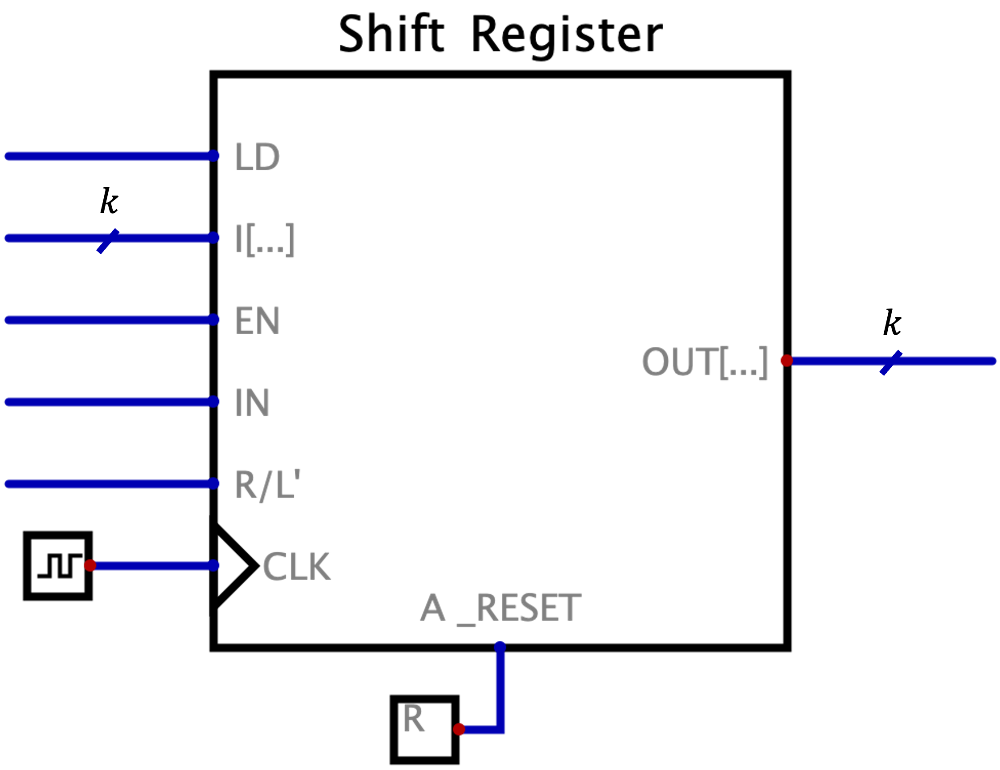
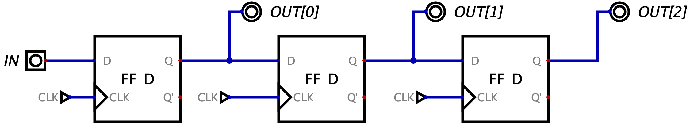
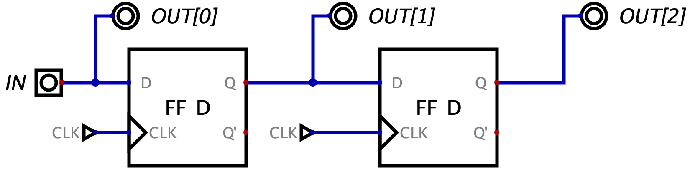
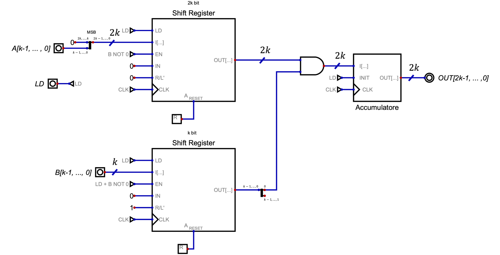
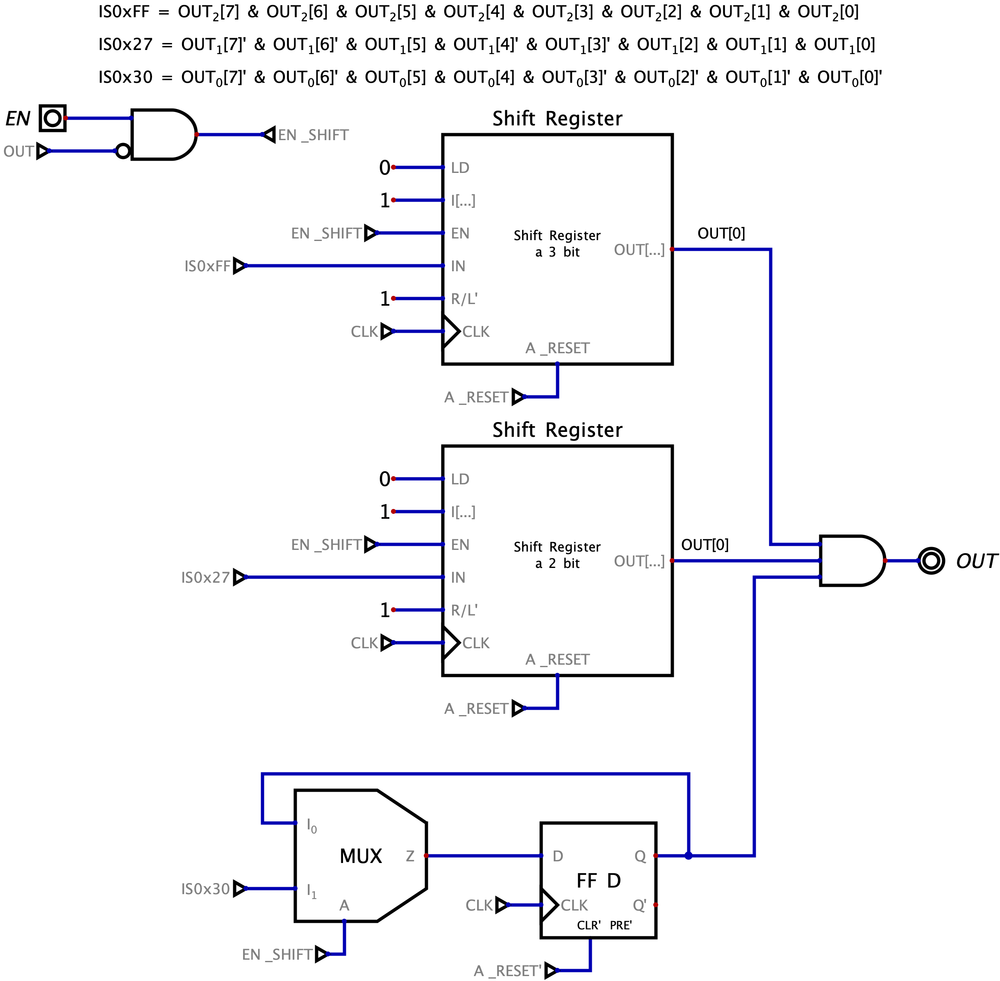

Definizione - Logical Shift Register
Un Logical Shift Register è una rete logica sincrona in grado di memorizzare gli ultimi\( k\) bit ricevuti.
Durante la regolare attività esso fornisce in uscita al bit \( OUT[k - 1]\) (ovvero "l'ultimo" della "coda") il segnale inserito all'istante precedente. I possibili ingressi di questo componente sono:
L'implementazione del comportamento base (ovvero di uno shift register dotato dei soli ingressi \( EN\) e \( IN\) con scorrimento a destra) è molto semplice e sfrutta il fatto che nei flip-flop il tempo di hold è minore del tempo di risposta. Si ha infatti la seguente rete:
Durante la regolare attività esso fornisce in uscita al bit \( OUT[k - 1]\) (ovvero "l'ultimo" della "coda") il segnale inserito all'istante precedente.

- un ingresso \( CLK\) per il segnale di clock;
- un ingresso sincrono \( LD\) che permette di caricare tutti i \( k\) bit forniti nell'ingresso \( I[...]\);
- un bus di \( k\) segnali sincroni in ingresso \( I[k - 1, \ldots, 0]\);
- un ingresso sincrono \( EN\) che regola se il registro deve continuare a mantenere i dati in memoria (\( EN = 0\)) oppure se effettuare lo "scorrimento" (\( EN = 1\));
- un ingresso sicrono \( IN\) che indica qual è l'ultimo bit da inserire;
- un ingresso sincrono \( R/L'\) ("Right / Left'") che consente di variare la direzione dello shift;
- un ingresso asincrono \( A\_RESET\) che carica
L'implementazione del comportamento base (ovvero di uno shift register dotato dei soli ingressi \( EN\) e \( IN\) con scorrimento a destra) è molto semplice e sfrutta il fatto che nei flip-flop il tempo di hold è minore del tempo di risposta. Si ha infatti la seguente rete:
Osservazioni personali - Scorrimento a sinistra, scorrimento a destra
Immaginando un registro a \( k\) bit la cui memoria è la seguente
si hanno due possibili comportamenti:
- lo scorrimento a destra, ovvero si ha che il bit dell'ingresso \( IN\) è inserito in memoria nella posizione \( k - 1\). Il comportamento sarebbe quindi il seguente:
- lo scorrimento a sinistra, ovvero si ha che il bit dell'ingresso \( IN\) è inserito in memoria nella posizione \( 0\). Il comportamento sarebbe quindi il seguente:
Definizione - Universal Shift Register
Una versione possibile di Logical Shift Register è l'Universal Shift Register che implementa le varie funzionalità messe a disposizione dallo Shift Register con diversi ingressi, attraverso dei codici. Si ha quindi che, considerando il componente relativo alla seguente rete  i codici operativi sarebbero:
i codici operativi sarebbero:
- \( S_{1} = 0\) e \( S_{0} = 0\) per il comando di "hold";
- \( S_{1} = 0\) e \( S_{0} = 1\) per il comando di "shit a destra";
- \( S_{1} = 1\) e \( S_{0} = 0\) per il comando di "shift a sinistra";
- \( S_{1} = 1\) e \( S_{0} = 1\) per il comando di "load";
Definizione - Comunicazione in serie e in parallelo
Quando si comunica un'informazione è possibile che questa "arrivi a destinazione" attraverso la sequenza di informazioni di un singolo segnale in sequenza (comunicazione seriale), oppure attraverso più segnali in contemporanea (comunicazione parallela).
Ovviamente, generalmente la comunicazione in parallelo risulta essere più efficiente anche se porta con sé diverse difficolta, tra cui:
Ovviamente, generalmente la comunicazione in parallelo risulta essere più efficiente anche se porta con sé diverse difficolta, tra cui:
- necessità di schermare le vie di comunicazione per evitare interferenze;
- necessità di un protocollo per gestire il sincronismo tra i segnali;
- impossibilità di mantenere la stabilità su lunghe distanze.
Definizione - Utilizzare uno Shift Register per la conversione da comunicazione seriale a parallela
Una rete che effettua la conversione tra comunicazione seriale e in parallelo secondo Moore è la seguente Si avrà quindi che per ottenere un dato in parallelo di \( k\) bit da uno in serie sono necessari \( k\) flip-flop e ogni informazione è valida ogni \( k\) cicli di clock.
È possibile realizzare anche la rete secondo Mealy nel seguente modo: In questo caso sono necessari \( k - 1\) flip-flop e l'informazione è valida ogni \( k - 1\) cicli di clock. Nonostante ciò si ottiene che una delle uscite non è "stabilizzata" dal flip-flop rendendola soggetta a possibili problemi.
In entrambi i casi si hanno reti equivalenti ad uno shift register, ovvero al componente privilegiato per questo compito

È possibile realizzare anche la rete secondo Mealy nel seguente modo:

In entrambi i casi si hanno reti equivalenti ad uno shift register, ovvero al componente privilegiato per questo compito
Definizione - Utilizzare uno Shift Register per la conversione da comunicazione parallela a seriale
Una rete che effettua la conversione tra comunicazione in parallelo e in serie secondo Moore è la seguente:  Si avrà quindi che ad ogni ciclo di clock sarà presente il bit desiderato sull'uscita \( OUT[0]\).
Si avrà quindi che ad ogni ciclo di clock sarà presente il bit desiderato sull'uscita \( OUT[0]\).
Ciò equivale ad utilizzare uno shift register nel seguente modo: ovvero equivale a fornire in ingresso i bit nell'ordine inverso rispetto a ciò che si vuole come risultato in serie.
ovvero equivale a fornire in ingresso i bit nell'ordine inverso rispetto a ciò che si vuole come risultato in serie.
Ciò equivale ad utilizzare uno shift register nel seguente modo:
Definizione - Utilizzare uno Shift Register per effettuare moltiplicazioni e divisioni
Considerando un qualsiasi numero binario unsigned, si ha che il suo shift (e l'ingresso di uno \( 0\)) effettui una moltiplicazione (shift verso sinistra) o una divisione intera (shift verso destra) per \( 2\).
È quindi possibile svolgere delle moltiplicazioni tra numeri binari utilizzando delle reti sincrone (nonostante queste siano ottenibili anche da un circuito combinatorio).
Ad esempio, considerando il numero binario \( 01101)_{2}\) (uguale a \( 13)_{10}\)) si ha che il suo shift verso sinistra
Si ha inoltre che il bit più significativo del numero da moltiplicare (in questo caso \( bit_{4}\)) indica se ci sarà overflow (nel caso esso sia \( 1\)). È quindi semplice utilizzare uno shift register per effettuare questa operazione.
È quindi possibile svolgere delle moltiplicazioni tra numeri binari utilizzando delle reti sincrone (nonostante queste siano ottenibili anche da un circuito combinatorio).
Ad esempio, considerando il numero binario \( 01101)_{2}\) (uguale a \( 13)_{10}\)) si ha che il suo shift verso sinistra
è uguale a \( 11010)_{2}\), ovvero \( 26)_{2}\).
Si ha inoltre che il bit più significativo del numero da moltiplicare (in questo caso \( bit_{4}\)) indica se ci sarà overflow (nel caso esso sia \( 1\)). È quindi semplice utilizzare uno shift register per effettuare questa operazione.
Esempio - Sintesi diretta - \( k\) bit multiplier
Progettare una rete asincrona secondo Moore che effettui la moltiplicazione tra due numeri di \( k\) bit unsigned utilizzando shift register e adder. Si considerino quindi come fattori gli ingressi \( A[k - 1 , \ldots, 0]\) e \( B[k - 1, \ldots, 0]\) validi quando il segnale \( LD\) è uguale a \( 1\). Il risultato, fornito sull'uscita \( OUT[2 \cdot k - 1, \ldots, 0]\), deve essere disponibile fino a quando \( LD\) non assumera nuovamente valore \( 1\).
Per progettare la rete consideriamo l'algoritmo di moltiplicazione in colonna. Si ha che il risultato è la somma delle moltiplicazioni tra il primo fattore e ogni singola cifra del secondo (moltiplicata per il suo peso). Si avrà quindi che ogni addendo della somma avrà come valore quello del primo fattore moltiplicato per \( 2\) per un numero di volte uguale alla sua posizione. Ovvero
Si ha che il risultato è la somma delle moltiplicazioni tra il primo fattore e ogni singola cifra del secondo (moltiplicata per il suo peso). Si avrà quindi che ogni addendo della somma avrà come valore quello del primo fattore moltiplicato per \( 2\) per un numero di volte uguale alla sua posizione. Ovvero  Un'idea potrebbe quindi essere effettuare lo shift (verso sinistra) di \( k\) volte del primo fattore (in modo da moltiplicarlo ogni volta per \( 2\)) e effettuare lo shift verso sinistra del secondo fattore (in modo da avere sempre il bit da moltiplicare nella stessa posizione). Ad ogni ciclo di clock si ottiene quindi una somma parziale che dovrà essere memorizzata in un accumulatore.
Un'idea potrebbe quindi essere effettuare lo shift (verso sinistra) di \( k\) volte del primo fattore (in modo da moltiplicarlo ogni volta per \( 2\)) e effettuare lo shift verso sinistra del secondo fattore (in modo da avere sempre il bit da moltiplicare nella stessa posizione). Ad ogni ciclo di clock si ottiene quindi una somma parziale che dovrà essere memorizzata in un accumulatore.
La rete sarà quindi così formata: dove \( B \ NOT \ 0\) è un segnale che indica se \( B\) è un numero non nullo (ovvero un OR con ogni bit di \( B\) in ingresso).
Per progettare la rete consideriamo l'algoritmo di moltiplicazione in colonna.
La rete sarà quindi così formata:

Definizione - Shift aritmetico
Per permettere la moltiplicazione e divisione di numeri signed è possibile utilizzare lo shift aritmetico.
Tale shift differisce di poco dallo shift logico, in particolare:
Tale shift differisce di poco dallo shift logico, in particolare:
- nella divisione (ovvero shift verso destra) è sufficiente che il bit inserito sia uguale al MSB del numero (ovvero al segno, che non può cambiare).
- nela moltiplicazione (ovvero shift verso sinistra) si continua ad aggiungere \( 0\). Tuttavia, per verificare l'overflow è sufficiente verificare che il segno del risultato sia uguale al segno del numero iniziale, o meglio, è necessario verificare che il MSB e il suo adiacente siano uguali.
Esempio - Sintesi diretta - Riconoscitore di sequenze con shift register
Progettare una rete sequenziale sincrona che controlla se gli ultimi tre byte inseriti nell'ingresso \( IN[7, \ldots, 0]\) mentre il segnale \( EN = 1\) sono stati \( FF)_{16}\), \( 27)_{16}\) e \( 30)_{16}\) (dove \( FF)_{16}\) è il primo byte della sequenza).
Nel caso la sequenza sia rispettata, nel periodo di clock successivo l'uscita \( OUT\) deve essere portata a \( 1\) e rimanere tale fino a che l'ingresso asincrono \( A\_RESET\) non è uguale a \( 1\): da quel momento la rete deve considerare che non fosse stato inserito alcun byte.
Innanzitutto la rete è di Moore in quanto deve rispondere al clock successivo all'ultimo inserimento nella sequenza.
Un modo (inefficiente) per riconoscere sequenze secondo Moore è porre degli Shift Register in serie per creare una coda che permetta di controllare ad ogni ciclo di clock se la sequenza è stata rispettata.
Dato che in ingresso si hanno \( 8\) bit ad ogni ciclo di clock, è necessario utilizzare \( 8\) shift register da \( 3\) bit in serie. In questo modo si avrà che:
Pensando ora al mantenimento dell'ingresso, si può lavorare utilizzando l'ingresso \( EN\_SHIFT\) per decidere quando abilitare lo shift register. \( EN\_SHIFT\) deve essere abilitato quando \( EN=1\) e \( OUT=0\). Si avrà quindi la seguente rete: Questa soluzione utilizza però un numero troppo elevato di componenti. È infatti sufficiente memorizzare solo se il byte è quello desiderato e per farlo conviene controllare inizialmente se il numero è quello corretto e memorizzarlo come singolo bit. Si avrà quindi la seguente rete:
Questa soluzione utilizza però un numero troppo elevato di componenti. È infatti sufficiente memorizzare solo se il byte è quello desiderato e per farlo conviene controllare inizialmente se il numero è quello corretto e memorizzarlo come singolo bit. Si avrà quindi la seguente rete:
Nel caso la sequenza sia rispettata, nel periodo di clock successivo l'uscita \( OUT\) deve essere portata a \( 1\) e rimanere tale fino a che l'ingresso asincrono \( A\_RESET\) non è uguale a \( 1\): da quel momento la rete deve considerare che non fosse stato inserito alcun byte.
Innanzitutto la rete è di Moore in quanto deve rispondere al clock successivo all'ultimo inserimento nella sequenza.
Un modo (inefficiente) per riconoscere sequenze secondo Moore è porre degli Shift Register in serie per creare una coda che permetta di controllare ad ogni ciclo di clock se la sequenza è stata rispettata.
Dato che in ingresso si hanno \( 8\) bit ad ogni ciclo di clock, è necessario utilizzare \( 8\) shift register da \( 3\) bit in serie. In questo modo si avrà che:
- all'uscita \( OUT[2]\) di ogni registro si hanno tutti i bit inseriti \( 3\) cicli di clock fa;
- all'uscita \( OUT[1]\) di ogni registro si hanno tutti i bit inseriti \( 2\) cicli di clock fa;
- all'uscita \( OUT[0]\) di ogni registro si hanno tutti i bit inseriti \( 1\) ciclo di clock fa;
Pensando ora al mantenimento dell'ingresso, si può lavorare utilizzando l'ingresso \( EN\_SHIFT\) per decidere quando abilitare lo shift register. \( EN\_SHIFT\) deve essere abilitato quando \( EN=1\) e \( OUT=0\). Si avrà quindi la seguente rete:
